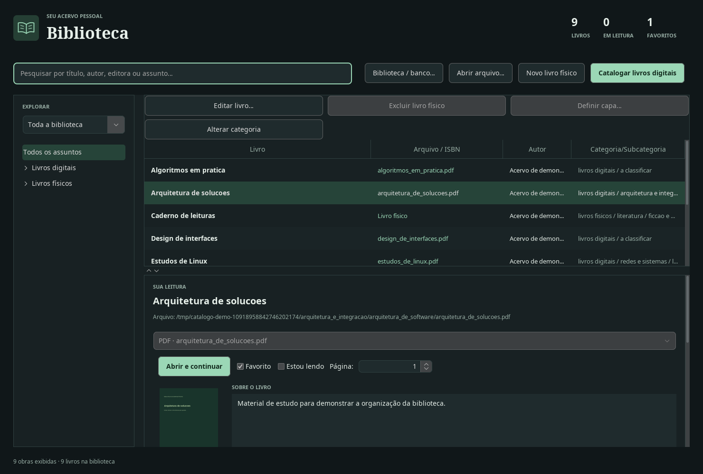

Várias bibliotecas
Crie bibliotecas separadas para seus estudos e suas leituras pessoais. Abra uma biblioteca existente quando precisar.
Biblioteca de estudosbiblioteca separada
Biblioteca pessoalbiblioteca separada
SUA BIBLIOTECA. NO SEU COMPUTADOR.
Livros físicos, PDFs e EPUBs em uma biblioteca pessoal. Mais organização para encontrar, ler e continuar.

2coleções: livros físicos e digitais
3sistemas: Windows, Linux e macOS
100%dos dados da biblioteca no computador
0contas e cadastros exigidos
EXPERIÊNCIA
Quatro recursos que trabalham juntos: biblioteca, busca, classificação e leitura.
Crie bibliotecas separadas para seus estudos e suas leituras pessoais. Abra uma biblioteca existente quando precisar.
Título, autor, editora, código do livro, assunto e anotações. Combine palavras e encontre o que procura.
Cada livro vai para um assunto e subassunto. Ajuste a organização ao seu jeito de ler.
Leia PDFs no próprio aplicativo, acompanhe a página em que parou e guarde suas anotações.
Explorar a leitura ↗COMO FUNCIONA
Veja o que acontece no aplicativo, do primeiro cadastro à próxima leitura.
Escolha a pasta dos livros e dê um nome ao arquivo que guardará os cadastros e as anotações. Você também pode abrir uma biblioteca já salva.
O aplicativo procura o título, o autor e outras informações disponíveis e organiza os livros por assunto e subassunto.
Veja a capa, as informações do livro e onde o arquivo está salvo. Mude o assunto quando precisar.
O ISBN é o número que identifica o livro, geralmente junto ao código de barras da capa. Digite esse número ou use um leitor de código de barras compatível. Se preferir, preencha os campos manualmente.
A busca preenche as informações disponíveis e tenta encontrar a capa, com indicação do progresso. Revise os campos e personalize a categoria.
Só o botão Salvar alterações grava o cadastro físico. Cadastrar novo livro limpa os dados pendentes sem salvar.
Leia arquivos PDF dentro do aplicativo e continue de onde parou. Livros no formato EPUB abrem no programa de leitura instalado no computador.
Guarde favoritos, acompanhe a página atual e registre suas ideias nas anotações do livro.
Ajuste a altura da lista e dos detalhes. Role o painel inferior para acessar todas as informações.
DIGITAL + FÍSICO
Seja na estante ou no computador, seus livros ficam organizados em um só lugar.
| Recurso | Livros digitais | Livros físicos |
|---|---|---|
| Entrada no catálogo | Busca dos seus arquivos PDF e EPUB | Código do livro ou preenchimento manual |
| Informações e capa | Informações e imagem do documento | Busca na internet e edição manual |
| Classificação | Automática, com assuntos que você pode alterar | Automática, com assuntos que você pode alterar |
| Localização | Pasta e nome do arquivo | Campo de local ou estante |
| Leitura | PDF dentro do aplicativo; EPUB no seu programa de leitura | Registro de página e estado de leitura |
| Anotações | Salvamento automático | Confirmação em Salvar alterações |
| Biblioteca | Informações guardadas no computador, pesquisa, favoritos e organização por assunto | |
O QUE CONSIDERAR
Um aplicativo para o computador, com escolhas claras sobre seus dados e seus arquivos.
Físicos, PDFs e EPUBs reunidos sem separar suas referências em ferramentas diferentes.
Você escolhe onde guardar seus livros e pode reabrir uma biblioteca já salva.
Preenchimento das informações dos livros, busca de capas e organização automática por assunto.
O instalador já inclui os componentes necessários para abrir o aplicativo.
As informações e capas vêm de serviços na internet. Alguns livros podem ter dados incompletos. Confira o resultado antes de salvar.
A catalogação digital organiza e renomeia documentos. Guarde uma cópia de segurança dos livros e do arquivo da biblioteca.
Esse recurso está incluído na versão para Linux. Nos outros sistemas, a busca de informações em documentos escaneados é limitada.
As informações ficam neste computador. Para usá-las em outro, leve uma cópia dos livros e do arquivo da biblioteca.
A PRÓXIMA LEITURA COMEÇA AQUI
Baixe o instalador para o seu computador. Seus próprios livros fazem o resto da história.
Assistente de instalação para Windows
Buscando última versão…
Carregando downloadAbra o arquivo baixado e siga as instruções na tela.
Instalador e outras opções para Linux
Buscando última versão…
Carregando downloadPreparado no Ubuntu 24.04. Inclui leitura de texto de documentos escaneados.
Para Macs com chip M1, M2 ou mais recente
Buscando última versão…
Carregando downloadAbra o arquivo baixado e arraste o programa para a pasta Aplicativos.
Consultando os arquivos publicados. Downloads fornecidos diretamente pelo GitHub.
PERGUNTAS FREQUENTES
Respostas diretas para começar com tranquilidade.
Não. O catálogo e suas anotações ficam no computador. Você precisa de internet para buscar as informações e as capas dos livros. Para pesquisar nos livros que já cadastrou, não precisa estar conectado.
Livros da sua estante e arquivos digitais. Os formatos aceitos são PDF, comum em documentos e apostilas, e EPUB, usado em livros eletrônicos. Você pode pesquisar os livros físicos e digitais juntos.
No Windows, abra o arquivo baixado e siga as instruções. No Mac com chip Apple, abra o arquivo e arraste o programa para Aplicativos. No Linux, escolha o instalador ou uma das opções abaixo do botão de download. Para usar o instalador pelo Terminal, a janela de comandos do Linux, veja o exemplo:
chmod +x catalogo-livros-*-linux-x86_64.run
./catalogo-livros-VERSAO-linux-x86_64.runTroque VERSAO pelo número do arquivo baixado. O sistema pode mostrar um aviso de segurança ao abrir o instalador. Confira se o arquivo veio desta página antes de continuar.
Sim, se você guardou os livros e o arquivo da biblioteca. Na primeira abertura, escolha o arquivo que já usava. Se preferir começar do zero, escolha uma pasta e dê um nome para a biblioteca. O aplicativo prepara o restante.
Sim. Pelo botão Biblioteca / banco…, você pode trocar de biblioteca. Cada uma tem seu arquivo de cadastros e anotações, e várias podem ficar na mesma pasta. O aplicativo lembra qual você usou por último.
O aplicativo procura seus livros digitais, lê as informações disponíveis e organiza os arquivos automaticamente por assunto. Eles podem receber novos nomes e mudar de pasta. Cópias iguais são separadas para você conferir. Quando não há informações suficientes, o arquivo fica na pasta a_classificar, para organizar depois.
Não. Buscar pelo código do livro apenas preenche as informações, a capa e a sugestão de assunto. Clique em Salvar alterações para gravar. Cadastrar novo livro limpa o formulário sem salvar o conteúdo pendente.
Não. O aplicativo organiza seus próprios livros e documentos. As imagens mostram apenas um acervo de demonstração.
Copie a pasta dos livros e o arquivo da biblioteca para outro local, como um HD externo. Feche o aplicativo antes de copiar. Se também usa o catálogo no navegador, pare a consulta em segundo plano para que as informações não mudem durante a cópia. Essa cópia não é feita automaticamente.
O contador soma quantas vezes os arquivos do aplicativo foram baixados, segundo os registros do serviço que entrega os downloads. Uma pessoa pode baixar mais de um arquivo, por isso o número não é uma contagem de pessoas. Ele é atualizado quando sai uma versão nova e também ao longo do dia.
No seu computador, sem criar conta. Comece com os livros que você já tem.